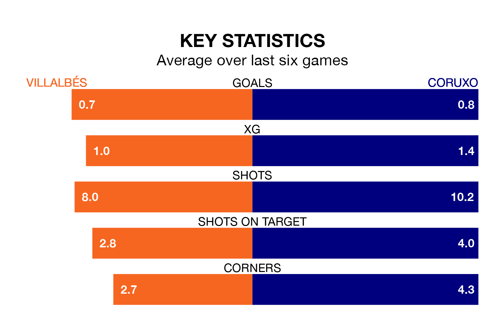

Villalbés face Coruxo at the Estadio Municipal A Magdalena on Sunday looking to secure a first win in seven Segunda División RFEF Group 1 games.
Villalbés have lost two and drawn four matches since they last earned three points – against Deportivo La Coruña B on March 9.
They face a Coruxo side who have won three and drawn one over that time.
With 21 goals in 32 games so far this season, Villalbés are the league's lowest scorers with 0.7 goals per game. But they are conceding fewer than average too, letting in 31 goals at a rate of 1.0 per game.
Coruxo are also below average scorers, with 1.1 goals per game, compared to a league average of 1.2. They have conceded 1.4 goals per game.
The hosts are 14th in the table after 32 games, of which they have won seven and drawn 13, earning 34 points.
The away team are six places ahead of Villalbés in eighth, with 12 wins and six draws putting them on 42 points.
Villalbés's last match was on Sunday, a 2-0 loss against CD Guijuelo.
Coruxo lost 2-1 against Deportivo La Coruña B last time out, on April 20, with Mario García Alvarez on the scoresheet.
Updated: 07:59 (UTC), 26/04/24